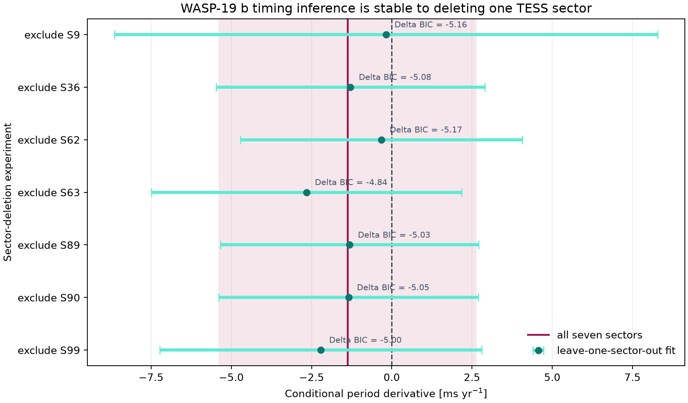
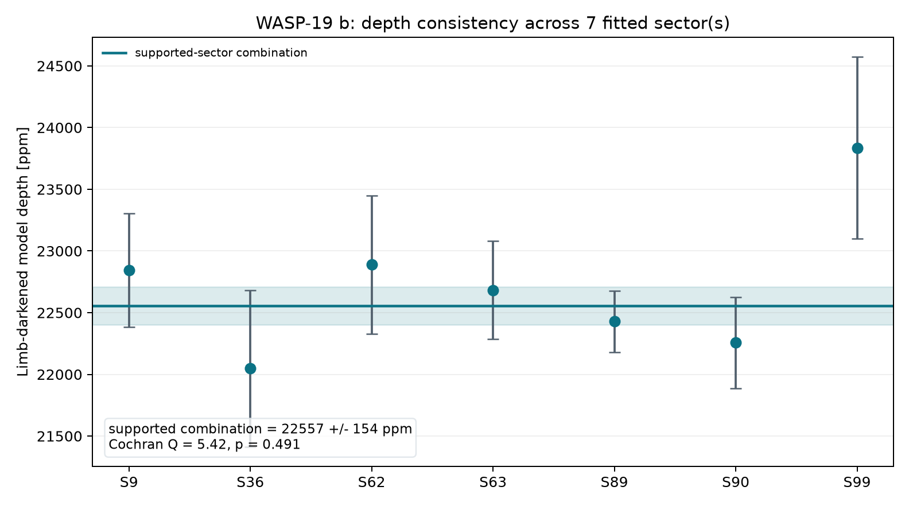

Data source notes
SHA-256, LF-normalised text
53f13b07840a8e6729f5b7b9d1f8d8c6f46a2a04788b8ff1b012c02bf794c66bBrowse 16 versioned evidence files. Table previews simply display stored rows. Consult the project report for the source, processing steps, and inference assumptions.


53f13b07840a8e6729f5b7b9d1f8d8c6f46a2a04788b8ff1b012c02bf794c66b| pl_name | hostname | ra | dec | pl_orbper | pl_tranmid | pl_trandur |
|---|---|---|---|---|---|---|
| WASP-19 b | WASP-19 | 148.4167672 | -45.6591078 | 0.78883852 | 2456402.7128 | 1.607 |
879b58ab8407d7d9f0ff57cc68abf82dd805c68f8832f56a3faad6402a0b8e1170a40881930e7b374632a7afabb34ba2b18ff81841f6a622f03cf1d0268a06c06e465e081090b36cdeb0d467bc27270e99801ca3d3ee75b10946a741d9a5a1a1c96bb25dadab40209390793713ad8ca6a579a0b224b06b9889f689cce555599a8d61f6d1c3bc90f061ae4ce37ce9509ed52f4836022576ef6581510061a5601f8f1e4763f361e85c0fe57036666264cc5a656cf2616e0fb1465497b3f1dd2e2f| quantity | value | unit |
|---|---|---|
| sector | 9 | TESS sector |
| period_days | 0.78883852 | days; NASA Exoplanet Archive |
| published_duration_hours | 1.607 | hours; NASA Exoplanet Archive |
| a_over_rstar | 3.53114178926 | fixed from saved a and stellar radius |
4c258699ef87e6763baa4fab16f2120749903c4ffc19ee637606c1a5567a0294| excluded_sector | events_retained | delta_bic_linear_minus_quadratic | period_dot_ms_per_year | period_dot_error_ms_per_year |
|---|---|---|---|---|
| 9 | 175 | -5.16436305384606 | -0.17396260676034805 | 8.459150568095946 |
| 36 | 177 | -5.081649326403721 | -1.2873798639027922 | 4.1878380098233 |
| 62 | 177 | -5.170694696786995 | -0.32406471767363393 | 4.387659811685397 |
| 63 | 171 | -4.839670978550103 | -2.655247946099621 | 4.83177772214425 |
01d8a966ba50402b06a5ebd33d6105d376440d8b0160b27e3e2879fe82517d0c| sector | epoch | predicted_bjd | measured_bjd | oc_seconds | formal_timing_error_seconds | sector_jitter_seconds |
|---|---|---|---|---|---|---|
| 9 | 2715 | 2458544.4093818 | 2458544.4109525234 | 135.71052325724827 | 44.92062906340404 | 46.95429890750132 |
| 9 | 2716 | 2458545.19822032 | 2458545.199078324 | 74.13153648742303 | 43.9184155940522 | 46.95429890750132 |
| 9 | 2717 | 2458545.9870588398 | 2458545.989006512 | 168.27885194244826 | 40.57042926660926 | 46.95429890750132 |
| 9 | 2718 | 2458546.77589736 | 2458546.7773095234 | 122.01093335725552 | 45.993078256909264 | 46.95429890750132 |
bcf01fcd3590b7dc2c203ec7862f67d5cc77f8460366cf3627af596be24baac7| sector | filename | transit_events | n_points | transit_supported | delta_bic | timing_shift_hours |
|---|---|---|---|---|---|---|
| 9 | tess2019058134432-s0009-0000000035516889-0139-s_lc.fits | 29 | 8212 | True | 44465.18558 | 0.03640608646 |
| 36 | tess2021065132309-s0036-0000000035516889-0207-s_lc.fits | 28 | 7752 | True | 38419.59924 | 0.04549565227 |
| 62 | tess2023043185947-s0062-0000000035516889-0254-s_lc.fits | 30 | 8160 | True | 33276.91728 | 0.05331566713 |
| 63 | tess2023069172124-s0063-0000000035516889-0255-s_lc.fits | 34 | 9382 | True | 53308.219 | 0.05429360256 |
eb3687619568c5eea2bf0bdd56e0c76f5c3e10e24620d6964680f4ea8a303514| quantity | value | unit |
|---|---|---|
| events_fitted | 204 | count |
| events_supported | 204 | count; individual Delta BIC >= 10 |
| sectors | 7 | count |
| timing_baseline_days | 2528.22896616 | days |
1bd9c73fce42ab0555da025876e217d9bd560ab08dcfa856b4156f314da44db50d12a8e25af575f60d43163c4d0024348414b80c31613191c7476a5456f60c517e2bdb80e566f27b48be78adc8fc687cd277febb8ecc94ddc4374bd2c1f0feed46980d1e64445b9cdd09b7cda370411d93ab6d75ff9068e18abd2b7b21a6dc4d1ddb4b4a9c1460c26578ff7d1db363e4f848495202010a4be90af4e6f0460e07SHA-256 values verify the stored files. They do not independently validate the scientific analysis. Rebuild this page with python scripts/evidence_catalog.py followed by python scripts/render_evidence_page.py.